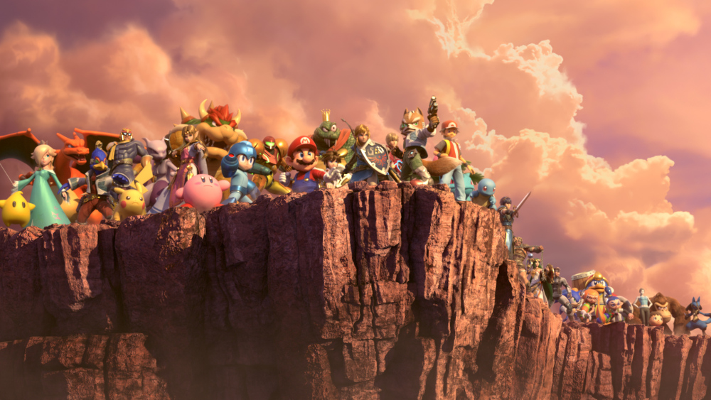

Spirits Make Smash Bros. Ultimate's Single-Player Much More Compelling
The Super Smash Bros. series has always excelled in a party setting thanks to its frenetic action and easy-to-learn mechanics, but the franchise has generally struggled to offer an equally compelling single-player experience. While each installment has featured a variety of modes tailored to solo players--the most robust being Super Smash Bros. Brawl's Subspace Emissary, a full-fledge crossover adventure--none of these have had the same lasting appeal as its standard Smash mode. The series' latest entry, Super Smash Bros. Ultimate for Switch, introduces a few new single-player options of its own in the form of the Spirit Board and World of Light mode, and from what we've seen of them thus far, they look to be just what the series needed to elevate its solo experience.
We had the opportunity to try both of the new solo modes during a recent hands-on demo of Super Smash Bros. Ultimate. Much like Subspace Emissary, World of Light is an expansive single-player adventure that unites the game's motley cast against a powerful, supernatural entity known as Galeem. As we saw during the final Super Smash Bros. Ultimate Direct, the story begins when Galeem unleashes a barrage of light that reduces every character on the roster--with the exception of Kirby--to Spirits, beings who have lost their corporeal form. As the sole survivor of the onslaught, it falls to the intrepid puffball to rescue the other fighters and put a stop to Galeem's machinations.
Despite its initial similarities to Subspace Emissary, World of Light differs from it in some notable ways. While the campaign does feature some cutscenes, Nintendo says it isn't quite as story driven as Brawl's adventure mode. Instead, World of Light compensates for its lighter narrative with a sprawling world map, which features branching pathways and dozens of battles to take part in. As you work your way through these bouts, you'll gradually rescue other characters, who you'll then be able to freely switch between as you head toward the final confrontation with Galeem.